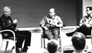

It’s not all hard work and no play!
The packed programme at the SPA conference means that it is very intensive,
so it’s important to take time out in the evenings to relax.
Food and drink at SPA2005
The Robinson Centre has a well stocked bar and an excellent restaurant. All
meals are included in the registration fee, and an evening spent in the bar
is an excellent way to meet and get to know your fellow delegates. Many great
ideas and good contacts have been made over a beer at the SPA (formerly OT)
conferences over the years!
Leisure facilities
At the Robinson Centre you have access to the swimming pool, gym and sauna facilities
at the adjacent Harpers Leisure Suite.
Diversions
In addition to all of this, the SPA conference organisers also schedule evening
diversions for your entertainment. Although the specific details for SPA2005
are not yet confirmed, recent years have seen Beer and Wine Tasting, Guitar
recitals, drumming workshops, “Just a Minute” panel quizzes and circus skills
workshops.

Book to attend SPA2005 - last year the conference sold out.
"An excellent conference where genuine delegate participation is the key to
its success ... A great contribution to raising the standards of software
engineering"
- Anthony Kesterton, IBM (Rational Software)